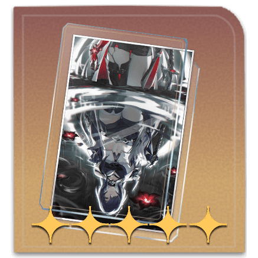

Acheron es un personaje de Honkai: Star Rail que pertenece a la Vía de la Nihilidad y utiliza el elemento Rayo. Es un DPS que sobresale al infligir debilitamientos a los enemigos, reduciendo sus defensas y aplicando acumulaciones que aumentan el daño recibido
Su ataque básico inflige daño de Rayo a un único objetivo, mientras que su habilidad especial, Octobolt Flash, aplica una acumulación llamada Slashed Dream y un debilitamiento conocido como Crimson Knot, causando daño adicional a enemigos cercanos. Su Ultimate, Slashed Dream Cries in Red, desata múltiples ataques que ignoran resistencias, causando un daño masivo y amplificando el daño recibido por el objetivo
Es ideal en composiciones con multiples personajes de Nihilidad, beneificandose de los debilitamientos para usar su Ultimate
Acheron's Gameplay Showcase
| Estadisticas a Priorizar | Mejor cono |
|

En la Orilla |